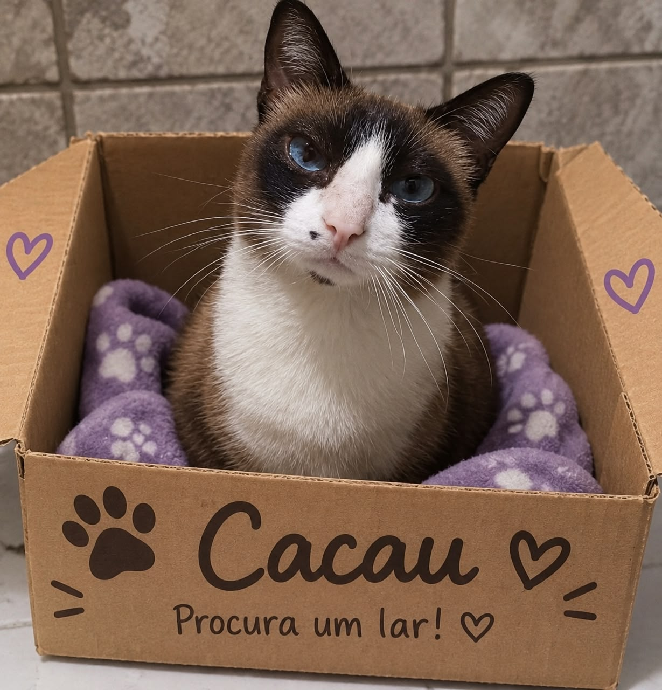

Nossa missão
Resgatar, cuidar e encontrar lares amorosos para gatos abandonados, promovendo a guarda responsável e a conscientização sobre o respeito aos animais.

Em 2019, a estudante de veterinária Marina Duarte encontrou uma gatinha da raça Snowshoe, assustada dentro de uma caixa, debaixo de um viaduto na zona leste de São Paulo. Ela a chamou de Cacau. Marina viu que a única coisa que ela precisava era que alguém a adotasse. Marina cuidou dela no quarto da república onde morava, e foi ali, entre mamadeiras e noites em claro, que nasceu a ideia da MiauDota.
Nos primeiros meses, a ONG era uma rede de amigos que dividia ração, transporte e contas de veterinário. Faltavam espaço, dinheiro e mãos, e muitas vezes a gente chorava mais do que comemorava. Mesmo assim, cada gato que ia para uma casa de verdade nos dava força para continuar. Aos poucos vieram os voluntários, os lares temporários, os mutirões de castração e, em 2022, nossa primeira sede.
Hoje, a MiauDota é uma comunidade de pessoas que acreditam que adoção responsável muda vidas, a do gato e a da família que o recebe. Seguimos com o mesmo propósito do primeiro dia: nenhum gato deve ser deixado para trás. E a Cacau? Mora com a Marina até hoje e manda lembranças.
"Nenhum gato deve ser deixado para trás."
Cada passo da MiauDota foi dado com a ajuda de muita gente. Veja como chegamos até aqui.
Marina encontra a Dota debaixo de um viaduto e, com a ajuda de amigos, começa a resgatar outros gatos.
A rede cresce com os primeiros voluntários e os primeiros lares temporários, que abrigam gatos até a adoção.
Inauguramos o espaço na Vila Mariana, com área de quarentena, atendimento veterinário e sala de visitas.
Realizamos o primeiro mutirão gratuito para tutores de baixa renda, ajudando a reduzir o abandonment.
Chegamos a 986 adoções e 62 voluntários ativos, e seguimos com o mesmo propósito do primeiro dia.
E a nossa história continua. O próximo capítulo pode ter o seu nome.
Mais do que uma ONG, somos pessoas unidas por um mesmo propósito: cuidar de quem não tem voz.
Resgatar, cuidar e encontrar lares amorosos para gatos abandonados, promovendo a guarda responsável e a conscientização sobre o respeito aos animais.
Um futuro em que nenhum gato precise viver nas ruas e toda adoção seja um compromisso para a vida toda.
Cada gato é único, com nome, história e personalidade.
Mostramos de onde vêm os recursos e como cada real é usado.
Adoção é compromisso, e acompanhamos cada família depois da entrega.
A vida animal vem antes de qualquer interesse. Não vendemos, adotamos.
Nada acontece sem voluntários, apoiadores e adotantes.
Esses valores guiam cada resgate, cada adoção e cada decisão que tomamos.
Cada número é uma vida que mudou. Desde 2019, a MiauDota já alcançou: